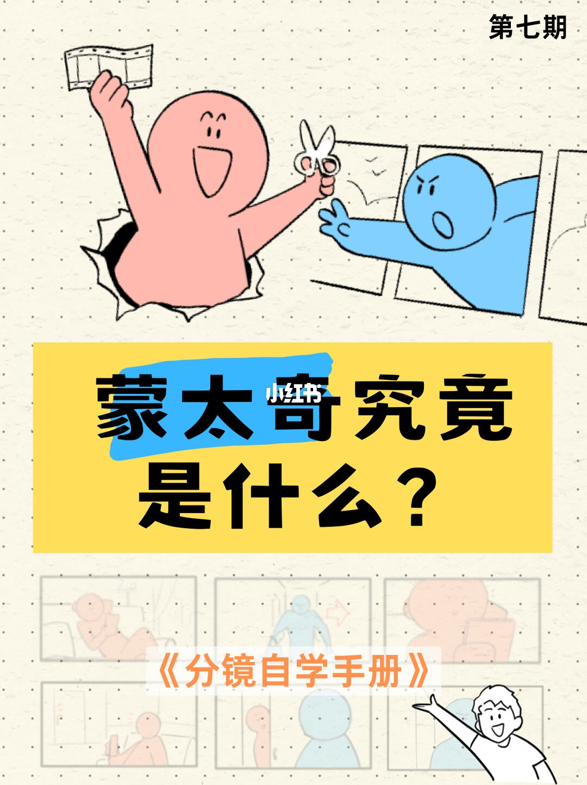
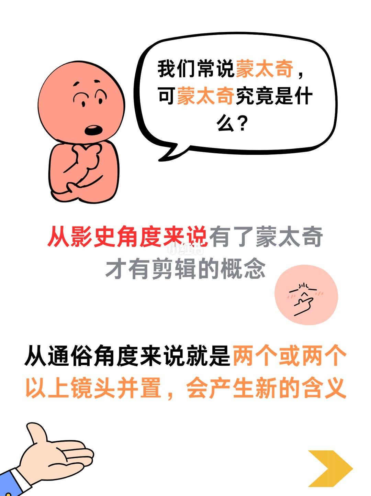
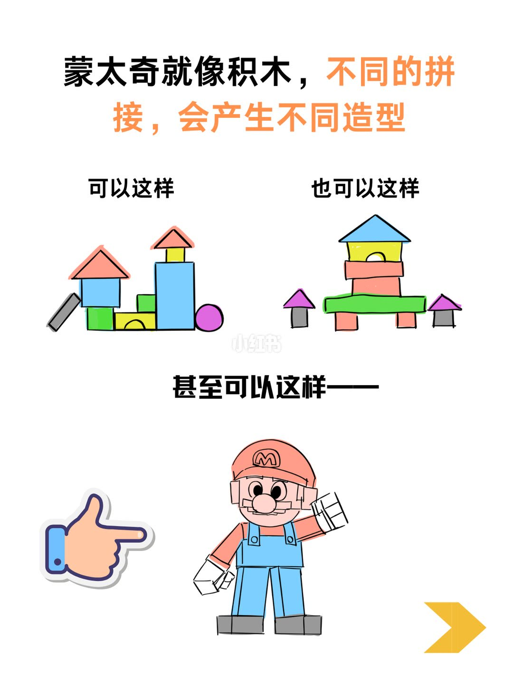
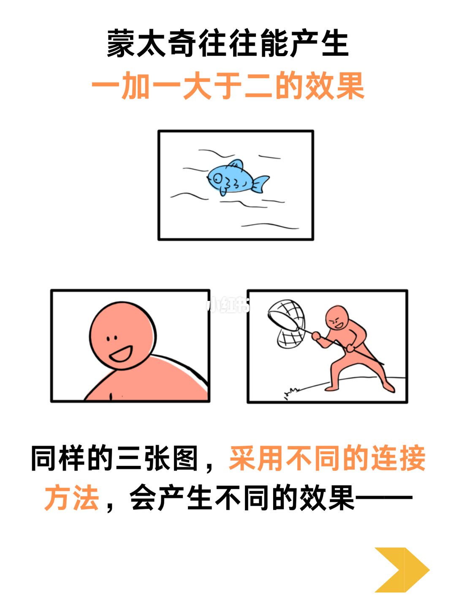
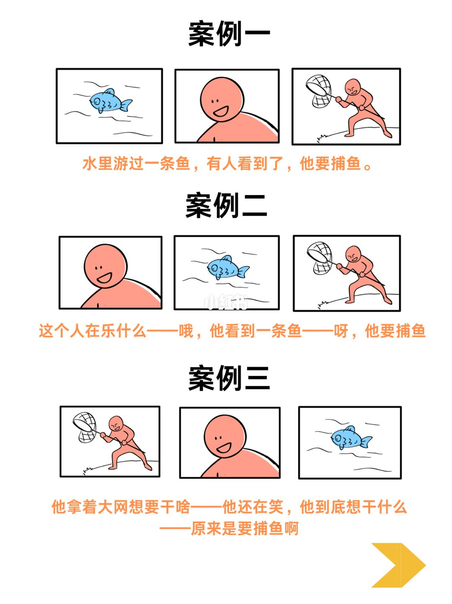
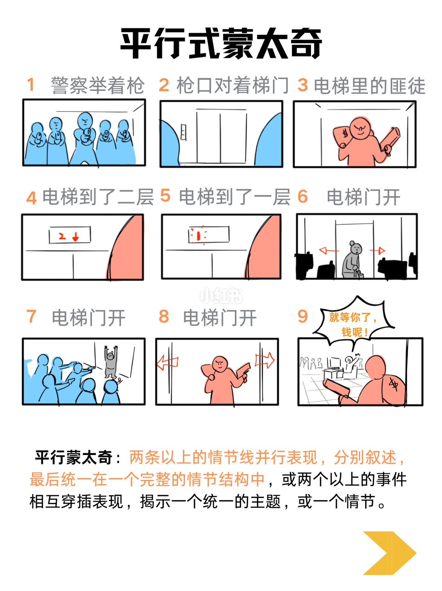
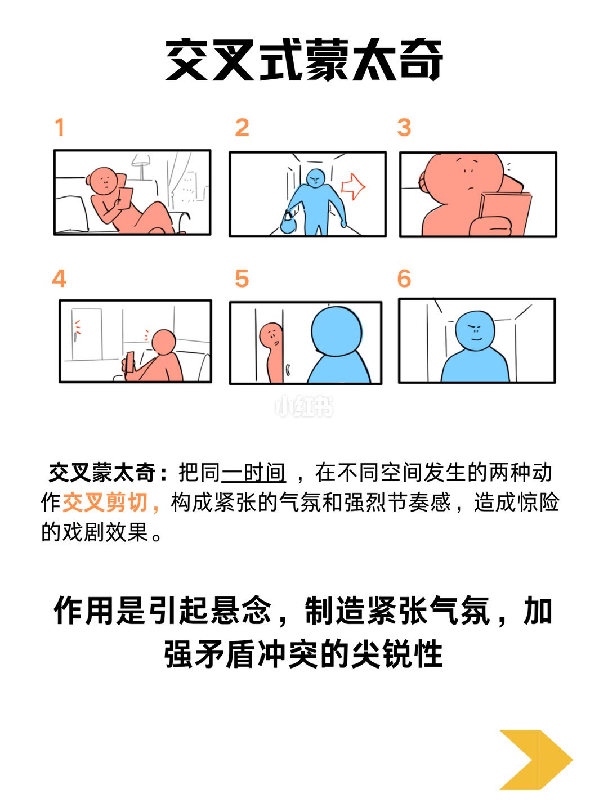
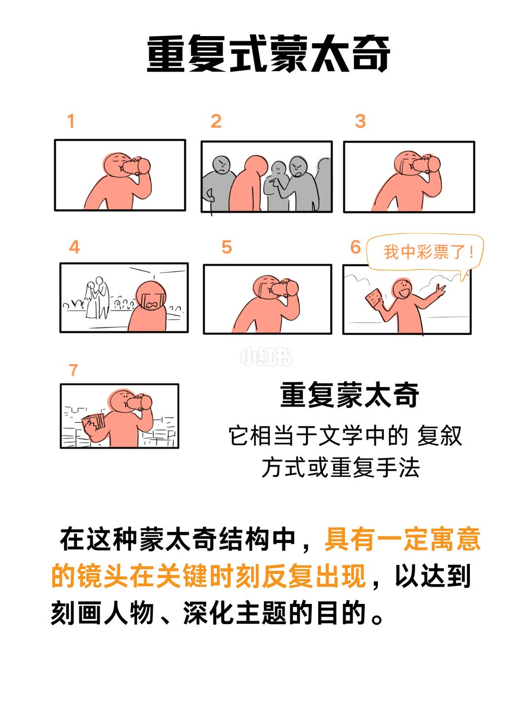
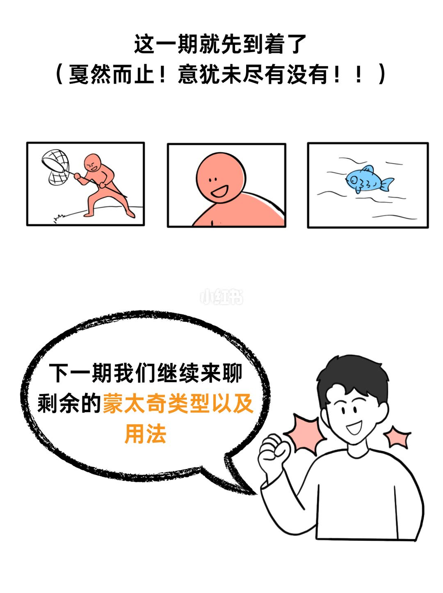
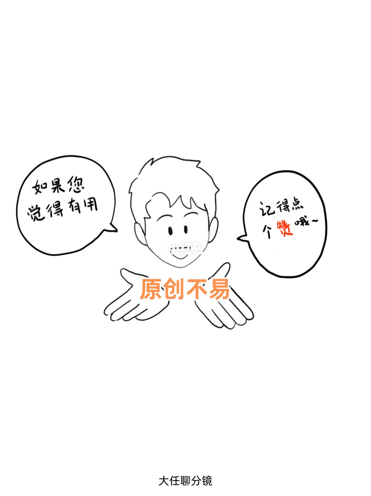

图文实录 · 小红书 · 大任聊分镜
蒙太奇究竟是什么？
蒙太奇在这套笔记里先被说成两层：影史上有了它，才有剪辑的概念；通俗地说，就是两个或两个以上镜头并置，从而产生新的含义。同一组画面换连接顺序，含义跟着换。本期目录列了六种，正文只展开平行、交叉、重复三种。
1/12
第七期封面
右上角写「第七期」。黄底大标题是「蒙太奇究竟是什么？」。下方白条是《分镜自学手册》。画面上有拿着胶片和剪刀的角色，以及一排分镜格。这一页没有定义。

2/12
影史一句，通俗一句
气泡问：我们常说蒙太奇，可蒙太奇究竟是什么？中间两行：从影史角度来说有了蒙太奇，才有剪辑的概念。底下：从通俗角度来说就是两个或两个以上镜头并置，会产生新的含义。「两个或两个以上镜头并置」和「会产生新的含义」被标成强调色。

3/12
积木换拼法，造型就换
标题：蒙太奇就像积木，不同的拼接，会产生不同造型。左边「可以这样」，是一小组房屋状积木。右边「也可以这样」，是另一组更高的积木。底下「甚至可以这样——」，积木拼成一个戴帽子的人物，画面没有写出角色名字。

4/12
同一组三张图，连接方法还没换
上句：蒙太奇往往能产生一加一大于二的效果。中间三格：一条鱼、一张笑脸、一个拿着大网的人。下句：同样的三张图，采用不同的连接方法，会产生不同的效果——。这一页只摆出三张图，三种顺序在下一页。

5/12
三种顺序，三句含义
案例一顺序是鱼、笑脸、拿网的人。配文：水里游过一条鱼，有人看到了，他要捕鱼。
案例二顺序是笑脸、鱼、拿网的人。配文：这个人在乐什么——哦，他看到一条鱼——呀，他要捕鱼。
案例三顺序是拿网的人、笑脸、鱼。配文：他拿着大网想要干啥——他还在笑，他到底想干什么——原来是要捕鱼啊。

6/12
这是设计镜头和剪辑的底层逻辑
上句：类似的玩法还有很多，它让重新组合的镜头有了新的含义。中间：这也是设计镜头和剪辑的底层逻辑。人物低头看一块屏幕。下句：蒙太奇的种类有很多，下面我给大家介绍几种常用的类型。
7/12
六种常用类型，第三项被水印挡住
标题：常用的蒙太奇类型。能读清的五项是：平行式蒙太奇、交叉式蒙太奇、隐喻蒙太奇、颠倒蒙太奇、对比蒙太奇。第三项黑条中间盖着「小红书」水印。水印两侧以「重」开头、以「蒙太奇」结尾；隔离放大后读作「重复性蒙太奇」。整页 OCR 在水印处断成「重…蒙太奇」。第 10 页标题则写成「重复式蒙太奇」。这一项无法在无遮挡的情况下逐字确认。
8/12
平行式：两条线最后收成一件事
标题：平行式蒙太奇。九格示意：1 警察举着枪。2 枪口对着梯门。3 电梯里的匪徒，提着带钱袋符号的包。4 电梯到了二层。5 电梯到了一层。6 电梯门开，出来的是拄杖的灰衣人。7 电梯门开，警察的枪口对着举手的灰衣人。8 电梯门开，红衣人从另一扇门出来。9 对白是「就等你了，钱呢！」。
定义原文：平行蒙太奇：两条以上的情节线并行表现，分别叙述，最后统一在一个完整的情节结构中，或两个以上的事件相互穿插表现，揭示一个统一的主题，或一个情节。

9/12
交叉式：同一时间，不同空间
标题：交叉式蒙太奇。六格没有逐格字幕，画面在室内的人和门外走近的人之间来回切，最后两人出现在同一道门附近。格内动作的细部（手里是书还是屏幕、门外是否有声音线）无法从文字确认，只能确认编号 1 到 6 和两条线在靠拢。
定义：交叉蒙太奇：把同一时间，在不同空间发生的两种动作交叉剪切，构成紧张的气氛和强烈节奏感，造成惊险的戏剧效果。作用是引起悬念，制造紧张气氛，加强矛盾冲突的尖锐性。「同一时间」「交叉剪切」在画面上被强调。

10/12
重复式：有寓意的镜头在关键时刻再出现
标题：重复式蒙太奇。七格里，喝东西的侧影出现在 1、3、5、7。中间穿插被一群人围住、看着一场婚礼、举着彩票说「我中彩票了！」。第 7 格仍在喝，手里多了一叠钱。各格没有另写字幕，婚礼和被围的情节是画面，没有对白。
说明：重复蒙太奇，它相当于文学中的复叙方式或重复手法。在这种蒙太奇结构中，具有一定寓意的镜头在关键时刻反复出现，以达到刻画人物、深化主题的目的。「具有一定寓意」被标成强调色。

11/12
这一期就先到着了
标题原文是「这一期就先到着了」，括注「（戛然而止！意犹未尽有没有！！）」。中间又放了拿网的人、笑脸、鱼三格。气泡：下一期我们继续来聊剩余的蒙太奇类型以及用法。「蒙太奇类型以及用法」被标成强调色。隐喻、颠倒、对比在这一页仍然没有定义。

12/12
求赞和署名
左气泡：如果您觉得有用。右气泡：记得点个赞哦～，「赞」被涂成强调色。胸口艺术字：原创不易。页底账号：大任聊分镜。这一页没有蒙太奇定义。

收尾
结论。蒙太奇在这里指镜头并置之后多出来的含义。同一组鱼、笑脸、拿网的人，换顺序就从「看见鱼再去捕」变成「先笑再发现原因」或「先看见网，最后才知道是捕鱼」。平行、交叉、重复是三种不同的并置规则：多线收束、同时异地交叉、有寓意的镜头在关键处重复。
支撑页。两层定义在 2/12。积木类比在 3/12。一加一大于二和三张原图在 4/12。三种顺序的配文在 5/12。底层逻辑和转入类型在 6/12。六种目录在 7/12。平行的九格和定义在 8/12。交叉的定义和作用在 9/12。重复的七格、复叙和寓意在 10/12。未讲完的声明在 11/12。
边界。隐喻蒙太奇、颠倒蒙太奇、对比蒙太奇只有目录，没有定义和例子。第 7 页第三项被水印挡住，放大后像「重复性」，第 10 页标题是「重复式」，两页用字不能当成已经核对过的同一词。第 8 页定义后半写了「相互穿插」，和第 9 页的交叉剪切接近，笔记没有再做一道区分练习。第 9 页六格没有逐格字幕。例子都是示意图，没有影片名、片长或实拍。第 12 页只是求赞。第 11 页标题按画面写作「到着了」。